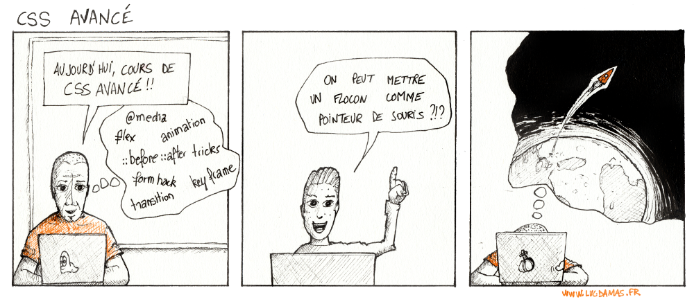

On a tous une idée particulière de la notion de CSS avancé...
Le Document Object Model est une représentation interne du document HTML en cours d'affichage.
Le DOM décrit l'arborescence du document, et permet ainsi d'en désigner les éléments le constituant.
<head>}[head]).
Cascading Style Sheets s'appuie sur le DOM pour permettre de définir des propriétés de style.
Une feuille de style CSS est une succession de règles de style :
font-size), et 14px) propriété: valeur;| Sélecteur | Définition | Exemple |
* |
sélecteur universel | <ul>...</ul> |
#menuItems |
sélecteur d'identifiant | <div id="menuItems">...</div> |
.invisible |
sélecteur de classe | <p class="invisible">...</p> |
element |
sélecteur d'élément | <div> |
[type] |
sélecteur d'attribut | <input type="checkbox"> |
[type="radio"] |
sélecteur d'attribut | <input type="radio"> |
+ variantes : ^=, $=, *=, ~=, etc. |
||
:hover |
Pseudo-classe | (survol de la souris sur l'élément) |
+ plein d'autres : disabled, :nth-child, nth-of-type, not(selecteur), :checked, etc. |
||
div img |
sélecteur de descendants | <div> <p> ... <img src="..."> </p> </div> |
div > p |
sélecteur d'enfants | <div> <p> ... </p> </div> |
input + p |
sélecteur d'adjacents | <input type="checkbox"> <p> ... </p> |
La liste complète des sélecteurs existants :
checkbox et radioRemplacer :hover par :checked (case/bouton radio coché) et faire dépendre
l'affichage de l'état de l'input (coché ou non).
::before et ::after::before et ::after correspondent à des pseudo-éléments (des éléments
à l'intérieur d'autres éléments), qui ne sont visibles qui si on leur assigne du contenu.
Le contenu (attribut content) peut être :
content: ''; 'Hello')url('path/to/image.png'))
Quelques idées sur l'utilisation des pseudo-éléments :
Une transition désigne le passage d'une valeur d'une propriété à une autre valeur.
Il s'agit de réaliser un passage progressif d'une valeur à une autre pour une propriété.
Il faut préciser, dans le style de l'élément :
:hover), sans délai. |
Le passage à la nouvelle valeur est instantané. |
Animer la transition consiste à changer la valeur d'une propriété de manière progressive. |
C'est le navigateur, qui, à partir d'un minimum d'informations, va calculer et réaliser
cette transition.
On définit une transition avec la combinaison des propriétés suivantes :
transition-property : le nom de la/des propriété(s) à animer (all pour toutes)transition-duration : la durée de la transition, en secondestransition-function : linear, ease-in, ease-out, ease-in-out, steps, bezier-curvetransition-delay : le délai avant de le déclenchement de l'animationToutes les propriétés ne peuvent pas forcément être animées :
color, background-color, border-color, etc.width, height, margin-XXX, padding-XXX, font-size,
etc.left, right, top, bottom, background-position,
etc.opacity, box-shadow, clip, filter, etc.La liste complète des propriétés animables est disponible à l'adresse :
keyframesIl est également possible de faire de "vraies animations" !
Une animation se définit par l'intermédiaire d'images-clé (keyframes) et
se rattache ensuite à l'élément concerné avec ses paramètres.
@keyframes nom_de_l_animation {
0% { /* règles de style */ }
25% { ... }
50% { ... }
75% { ... }
100% { ... }
}
div {
...
animation-name: nom_de_l_animation;
animation-duration: durée;
animation-direction: itération;
animation-...
}
animation-name : le nom de l'animationanimation-duration : la durée de l'animation (ex. 2s)animation-delay : le délai avant démarrage de l'animationanimation-transition-function : fonction de temporisation (cf. transitions)animation-direction : sens de l'animation (normal, reverse, alternate, etc.)animation-iteration-count : nombre d'itérations (entier ou infinite)animation-fill-mode : valeurs des propriétés conservées lorsque l'animation s'arrête (none, forwards, backwards, both)animation-play-state : état de l'animation (running, paused)Pour plus de détails sur les animations en CSS :
Dimensions figées (unités fixes par exemple 320px). Peu adapté à la variété de résolutions/appareils existants.
Dimensions exprimées en unités variables em, %, vw/vh, possiblement mixées avec des unités fixes (fonction calc). S'adapte automatiquement à la taille de la fenêtre.
Dimensions figées, mais diffèrent en fonction de la taille de l'écran (détectée par media queries). Prend en compte les points de ruptures usuels (320px, 480px, 768px, etc.).
Amélioration du design fluide, couplé avec les media queries utilisées dans le design adaptatif.
Le positionnement des blocs peut être un aspect important d'un design fluide/responsive. Différentes méthodes de positionnement existent :
static : par défaut, dans le flux d'affichage standard relative : position relative au flux d'affichage standard (décalages possibles)absolute : position par rapport au dernier bloc en relative ou absolutefixed : positionnement fixe dans la fenêtre. Depuis quelques années sont apparus de nouveaux types de positionnement de blocs qui sont très utilisés actuellement :
flex : pour déterminer une mise en page flexible en ligne ou en colonnesgrid : pour déterminer une mise en page sour forme d'une grilleL'idée de ces deux mécanismes est de calculer automatiquement certains placements et alignements qu'il serait complexe à réaliser à l'ancienne en apportant en plus une grande souplesse d'utilisation (fonctionnement similaire quelque soit le nombre de blocs du contenu).
Il s'agit de layouts (dispositions) qui s'appliquent non pas aux éléments en eux-mêmes, mais à leur bloc conteneur, pour indiquer comme celui-ci doit organiser son contenu.
flexboxLa mise en page flexbox a pour objectif de fournir un moyen efficace de positionner,
aligner et répartir les espaces entre les éléments présents dans un conteneur, et ce même lorsque leur
taille n'est pas connue ou variable.
On trouve deux types de propriétés :
display (affichage), flex-direction (sens d'apparition des éléments), flex-wrap (politique de retour à la ligne), justify-content (espacements entre les éléments), align-item (alignement vertical des éléments sur une ligne), align-content (espacement vertical entre les lignes).order (ordre d'apparition), flex-grow (permettre à un élément d'être plus large si nécessaire), flex-shrink (permettre à un élément de rétrécir si nécessaire), flex-basis (définir la largeur initial d'un élément avant espacement), align-self (modifier l'alignement vertical de l'élément) flex-direction: row (en ligne de gauche à droite), row-reverse (en ligne mais de gauche à droite), column (colonne de haut en bas), column-reverse (colonne de bas en haut)

flex-wrap: nowrap (pas de retour à la ligne), wrap (retour à la ligne), wrap-reverse (retour à la ligne, depuis le bas)

justify-content: center (centré), flex-start (début du bloc flexible), flex-end (fin du bloc flexible), space-around (espace uniforme autour des éléments), space-between (espace uniforme entre les éléments), space-evenly (espace uniforme entre les éléments et avec les bords)

align-item: flex-start (en haut du bloc), flex-end (en bas du bloc), center (centré verticalement), stretch (étiré verticalement), baseline (alignés sur les lignes d'écriture)

align-content: flex-start, flex-end, center, space-between, space-around, stretch.

(images d'illustrations reprises de
gridLa disposition en grille permet de placer des éléments dans un système en deux dimensions, sur des lignes et des colonnes.
On distingue deux types de propriétés :
display (affichage), grid-template-column/grid-template-row
(définition de la taille des lignes/des colonnes de la grille), grid-template-area (référence des zones des
grilles), grid-column-gap/grid-row-gap (espacements entre colonnes/lignes), justify-items
(alignements dans les lignes), align-items (alignements dans les colonnes),
justify-content (répartition de la grille dans l'espace)... grid-column-start, grid-column-end, grid-row-start,
grid-row-end (définition de l'étendue de l'élément sur la grille), grid-area (définition de l'étendue
en passant par le nom du template), align-self (modifier l'alignement vertical initialà, justify-self (modifier l'alignement horizontal).grid-template-columns/grid-template-rows : taille (longueur, pourcentage, fraction fr), nom (que vous choisissez), subgrid (sous-grille -- dimensions héritées du parent) grid-template-area : chaîne de caractères contenant des noms et/ou . (cellule vide) ou none (aucune cellule définie)grid-column-gap/grid-row-gap : taillepropriétés abrégées par grid-gap: column-gap / row-gapjustify-items : alignement horizontal start (début de la grille), end (fin de la grille), center (centré), stretch (étiré) align-items : alignement vertical -- même valeurs que justify-itemsjustify-content : espacement autour de la grille lorsque celle-ci est plus petite que son conteneur start, end, center, stretch, space-around, space-between,
space-evenly.grid-column-start, grid-column-end, grid-row-start et grid-row-end : nombre (ligne), nom (ex. row1-end, three, last-line), span nombre (étendu sur le nombre spécifié de piste de grille), span nom (étendu jusqu'à rencontrer la ligne désignée), auto (placement automatique) grid-column et grid-row : start / end grid-area : nom (de la zone créée avec grid-template-area) ou
row-start / column-start / row-end / column-endjustify-self : alignement horizontal start (début), end (fin),
center (centré) ou stretch (étiré)align-self : alignement vertical -- même valeurs que justify-selfIntégrées à CSS3, elles permettent d'interroger le navigateur pour connaître différentes informations : média (écran, imprimante, etc.), largeur/hauteur de la zone d'affichage, orientation, etc.
En fonction du résultat de ces requêtes, il est possible de définir des règles de styles conditionnées.
Déjà en CSS2, il était possible de définir des feuilles de style spécifiques en fonction du média.
<link rel="stylesheet" media="screen" href="screen.css" type="text/css" />
<link rel="stylesheet" media="print" href="print.css" type="text/css" />
screen : écranshandheld : [vieux] appareils mobilesprint : imprimanteaural/speech : synthèse vocalebraille : écransembossed : imprimantes brailleprojection : projecteurs (présentation avec slides)tty : terminal/police à pas fixetv : téléviseurall : tousUne media query est une expression qui s'évalue par vrai ou faux. Elle s'exprime à partir du média
et de ses capacités intrinsèques, qui peuvent se combiner avec and (et), only (uniquement)
et not (négation).
La disjonction se fait en énumérant plusieurs media queries à la suite.
Deux possibilités non exclusives :
<link rel="stylesheet" media="screen and (max-width: 640px)" href="small.css" ... >
@media screen and (min-width: 640px) {
aside { width: 200px; float: left; }
}
device-aspect-ratio : ratio du périphérique de sortie (par exemple : 16/9, 16/10, 4/3, etc.)aspect-ratio : ratio de la zone d'affichagedevice-height/device-width : hauteur/largeur de l'appareilheight/width : hauteur/largeur de la zone d'affichageorientation: orientation du périphérique (portrait ou landscape)resolution : résolution du périphérique (en dpi, dppx ou dpcm)Beaucoup d'entre eux peuvent être préfixés par min- ou max- pour exprimer des inégalités.
Redimensionnez la fenêtre de droite pour voir les règles appliquées.
Le viewport est une notion important dans les affiches sur mobile. Il s'agit de la surface de la fenêtre du navigateur.
Contrairement aux applications desktop, le mobile ne propose pas de fenêtre réelle du à la navigation tactile.
On distingue la surface réelle de la surface en pixels CSS (device-width x device-height) :
| Appareil | Surface réelle | Surface en pixels CSS |
| iPhone 4 | 640 x 960 | 320 x 480 |
| iPhone 5 | 640 x 1136 | 320 x 568 |
| iPhone 6+ | 1080 x 1920 | 414 x 736 |
| iPad 2 | 768 x 1024 | 768 x 1024 |
| iPad Air | 1536 x 2048 | 768 x 1024 |
Voir
Généralement supérieure à la surface physique (pour pouvoir afficher n'importe quelle page web comme sur un ordinateur de bureau), le viewport n'est pas fixé par le terminal mais... par le navigateur !
| Navigateur | largeur par défaut |
| Android 1, 2, 3 | 800 px |
| Android 4 | 980 px |
| Safari mobile | 980 px |
| IE mobile | 1024 px |
Pour effectuer le rendu d'une page, le navigateur va appliquer un niveau de zoom qui représente
la division device-width/viewport. La surface réelle n'entre pas en compte.
Exemple pour un iPhone 5 : le niveau de zoom initial sera de 0.326 (320px/980px).
Pour uniformiser le rendu des pages, il est possible de modifier différents paramètres du viewport, via le
tag<meta name="viewport" content="cle1=valeur1, cle2=valeur2, ...">
width: largeur de la fenêtre viewport (en pixels ou device-width)height: hauteur de la fenêtre viewport (en pixels ou device-height)initial-scale: zoom initial (réel, par ex. 1.0)minimum-scale/maximum-scale: zoom minimal/maximaluser-scalable: possibilité de zoomer (yes ou no)shrink-to-fit: possibilité de réduire la page pour pouvoir l'afficher (yes ou no)Beaucoup de navigateurs intègrent désormais des outils développeurs, qu'il est possible d'utiliser pour tester ses pages directement :
Ces outils permettent de :
Bootstrap est devenu incontournable. Actuellement en version 3, la version 4 est en beta.
h1 à h6, blockquote, code, pre, etc..lead, .small, .text-center, etc. ou à d'autres éléments comme .list-inline, .dl-horizontal, .pre-scrollable, etc..table, .table-striped, .table-bordered) d'images (.img-rounded, .img-circle, .img-thumbnail), de boutons (.btn, .btn-default, .btn-primary, etc. applicables sur input, a et button), des inputs (checkbox, radio, select, etc.), et bien d'autres.
grid avant l'heure) de 12 cases de larges. Quelques exemples de templates utilisant Bootstrap :
Bootstrap utilise plusieurs fichiers qui permettent de profiter pleinement des fonctionnalités offertes.
<link rel="stylesheet" href="https://maxcdn.bootstrapcdn.com/bootstrap/3.3.7/css/bootstrap.min.css"><script src="https://maxcdn.bootstrapcdn.com/bootstrap/3.3.7/js/bootstrap.min.js"></script><script src="https://ajax.googleapis.com/ajax/libs/jquery/3.2.1/jquery.min.js"></script>
Pour en savoir plus sur Bootstrap (3 et 4) et ses nombreuses possibilités :
Pour pallier certains manque de souplesse de CSS (pas de variables, pas de possibilité d'importations de styles, utilisation de préfixes vendeurs, etc.), différents outils/langages ont été mis au point. Ces derniers sont compilés pour produire une feuille de style CSS classique.
Parmi ceux-ci, on retiendra :
Il est désormais possible depuis CSS3 de déclarer des propriétés personnalisées (custom properties) dont le nom, choisi par vos soins, devra être préfixé par --.
Ces propriétés sont ensuite référencées par la fonction var(--maPropriete).
Les propriétés personnalisées sont héritées dans le DOM. Par habitude, on définit les propriétés génériques
dans le marqueur body.
Nous avons vu dans ce chapitre des techniques CSS avancées (form hacks, animations) qui ne nécessitent pas
de Javascript, ainsi que des notions en vogue à l'heure actuelle (positionnement flex,
grid) et responsive design.
Comme souvent, il n'y a pas de recette miracle : documentez-vous, lisez du code, multipliez les sources de documentation. N'hésitez pas à suivre les bonnes adresses sur Twitter (utilisez les réseaux sociaux !).
Gardez à l'esprit que, malheureusement, tous les navigateurs n'implémentent pas toutes les propriétés CSS.
Vérifiez la compatibilité avec